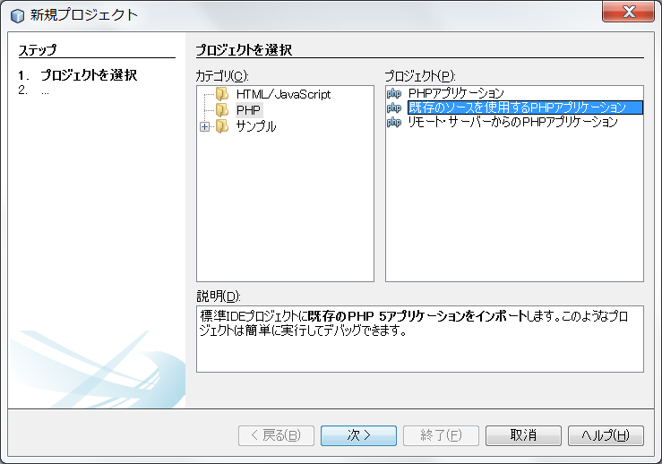
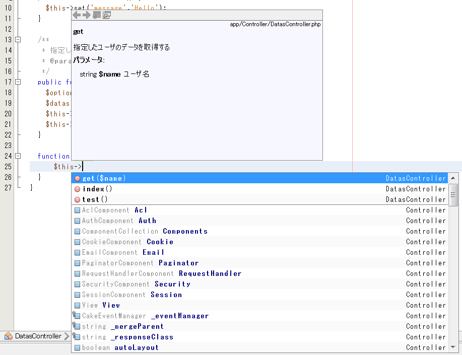

Skillup
チームラボオンラインスキルアップ課題
STEP1 掲示板を作ろう
- 1.インターネットのしくみ
- 2.HTTPのしくみ
- 3.WEBサーバを立ててみる
- 4.HTML,CSSを書いてみる
- 5.PHPを書いてみる
- 6.PHPでGET,POSTを受け取る
- 7.データベースを作成してみる
- 8.SQLを書いてみる
- 9.PHPからデータベースを操作してみる
STEP2 Twitterもどきを作ろう
- 1.JavaScriptを書いてみる
- 2.ログイン機能を作ってみる
- 3.入力チェックを作ってみる
- 4.ログイン機能をクラス化してみる
- 5.フレームワークとは
- 6.CakePHPの基本
- 7.CakePHPでログイン機能を書いてみる
- 8.画面仕様書とは
- 9.データベースを設計してみる
STEP3 オリジナルサイトを作ろう
STEP2-6.IDEを使ってみる
IDEとは統合開発環境の略で、ファイルツリー表示やコード補完をはじめとした、開発が便利になる機能がまとまったものです。特にNetBeansというIDEは軽量でCakePHPとの相性がよいため、NetBeansの使い方を紹介します。Javaの実行環境をインストールしていない人は無料Javaのダウンロードからインストールしておきましょう。
まずはNetBeans IDE ダウンロードから5種類あるうちのPHP用のNetBeans IDEをダウンロード・インストールします。インストールが終わったら起動してみましょう。
ファイル→新規プロジェクトからプロジェクトを作成します。以下のように[既存のソースを使用するPHPアプリケーション]を選択します。

以上でプロジェクトの作成が完了しました。あとは通常のエディタのように使用できます。ただし、PHPの文法上のエラーがあるとエラー箇所と内容をリアルタイムで表示してくれるといった便利な機能があります。
コード補完
NetBeansにはコード補完機能があり、何か1文字打つと定義した変数や関数の一覧が表示されたり、その際に変数や関数の説明が表示されたりします。これはphpDocumentor形式でコメントを書くことにより変数や関数の説明が表示されるという仕組みです。CakePHPはphpDocumentor形式でコメントが書かれているため、CakePHPの変数や関数も説明が表示されます。
自分で書いたコードにも説明が表示されるようにしてみましょう。以下は前回のDatasController.phpにphpDocumentor形式のコメントを追加したものです。
<?php
App::uses('AppController', 'Controller');
class DatasController extends AppController {
/**
* Helloを表示する
*/
public function index() {
$this->set('message','Hello');
}
/**
* 指定したユーザのデータを取得する
* @param string $name ユーザ名
*/
public function get($name){
$options = array('conditions' => array('name' => $name));
$datas = $this->Data->find('all', $options);
$this->set('datas', $datas);
$this->set('name', $name);
}
}
これによって以下のように関数の説明が表示されるようになりました。

プラグイン
NetBeansでは更にプラグインによって様々な機能を追加することができます。メニューのツール→プラグイン→使用可能なプラグインから新たなプラグインを追加できます。今回はPHP CakePHP Frameworkというプラグインを追加してみましょう。
それでは適当なコントローラの適当なアクション上で右クリックしてみましょう。ナビゲート→ビューへ移動では該当のビューが開きます。CakePHP→Format for CakePHPではコードがCakePHPの規約に従った形に整形されます。CakePHP→Run ActionではそのアクションのURLがブラウザで開きます。
その他にも様々な機能があります。詳しくは公式ページを参照してください。